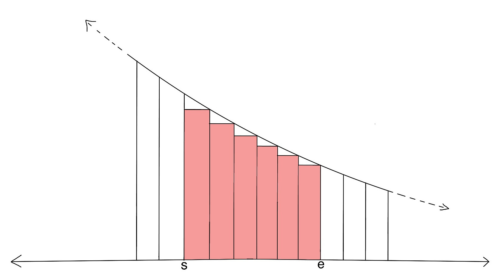
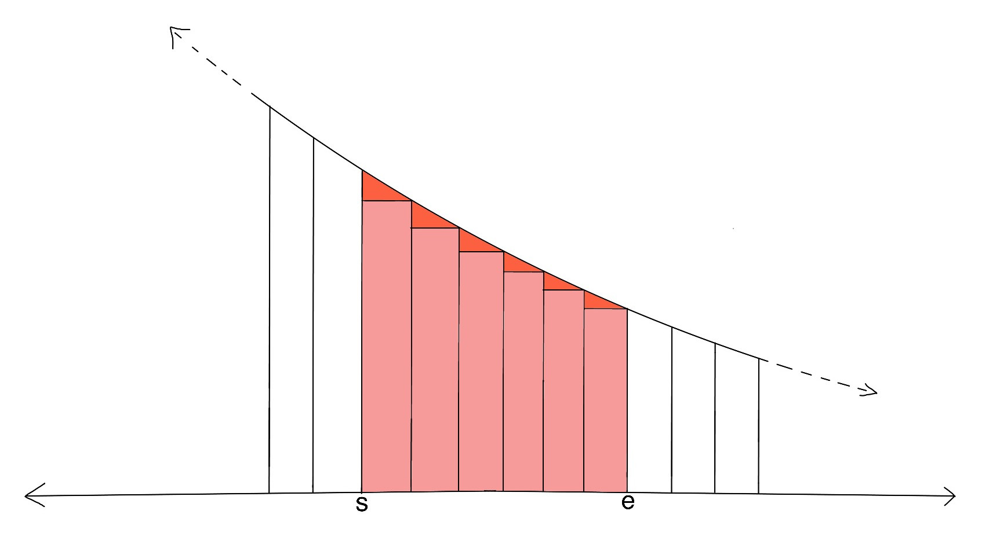
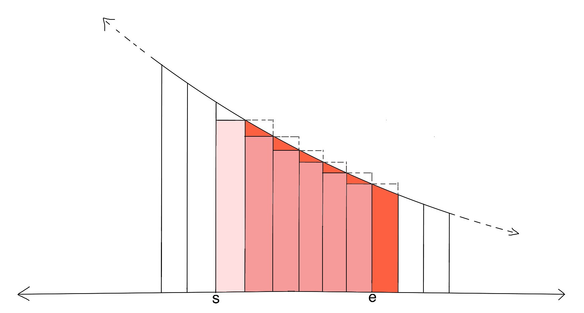

For the first test set, we can generate all possible arrangements of the cards from $$$1$$$ to $$$\mathbf{N}$$$. For each arrangement of the cards, we can play the game to find the score for that particular arrangement. Then the expected score of the game will be the average score over all arrangements. The total number of possible arrangements for $$$\mathbf{N}$$$ cards is $$$\mathbf{N}!$$$.
The time complexity is $$$O(\mathbf{N} \cdot \mathbf{N}!)$$$ which is under the required limit for $$$\mathbf{N} = 10$$$.
Our previous strategy would not work for this test set.
Let us consider arrangements where the number on top of the pile is $$$x$$$.
Then among the remaining $$$\mathbf{N} - 1$$$ cards, all the cards that are smaller
than $$$x$$$ will be discarded. We only need to take care of the ones that are
greater than $$$x$$$. So, the expected score for arrangements with $$$x$$$ on
top of the pile will be one higher than the expected score of the rest of the
cards greater than $$$x$$$. Also, it does not matter what the starting and
ending number on the cards is, all that matters is the number of cards. So, the
expected score of cards from $$$x + 1$$$ to $$$\mathbf{N}$$$ is equal to expected score of
cards from $$$1$$$ to $$$\mathbf{N} - x$$$. Assuming $$$E_\mathbf{N}$$$ denotes the expected
score of $$$\mathbf{N}$$$ cards, the expected score when $$$x$$$ is on top is $$$E_{\mathbf{N} - x}
+ 1$$$.
Now, $$$x$$$ ranges from $$$1$$$ to $$$\mathbf{N}$$$, so the expected score for $$$\mathbf{N}$$$ cards is $$$E_\mathbf{N} = \frac{\sum_{x=1}^{\mathbf{N}}(E_{\mathbf{N} - x} + 1)}{\mathbf{N}} = \frac{\sum_{i=0}^{\mathbf{N}-1}E_{i}}{\mathbf{N}} + 1$$$. The summation in the term is a cumulative sum of expected scores of first $$$\mathbf{N}-1$$$ natural numbers. So, expected score for $$$\mathbf{N}$$$ cards can be computed in linear time if we maintain the cumulative sum of the expected score for $$$\mathbf{N}-1$$$ cards.
Let us denote $$$\sum_{i=0}^{\mathbf{N}}E_i$$$ as $$$S_\mathbf{N}$$$, then from the result of
the previous section, we have $$$E_\mathbf{N} = \frac{S_{\mathbf{N}-1}}{\mathbf{N}} + 1$$$. Now, for
$$$E_{\mathbf{N}+1}$$$ we have:
$$$E_{\mathbf{N}+1} = \frac{S_\mathbf{N}}{\mathbf{N}+1} + 1 = \frac{E_\mathbf{N} + S_{\mathbf{N}-1}}{\mathbf{N}+1} + 1$$$
Now, substituting $$$E_\mathbf{N}$$$ from the previous result, we get:
$$$E_{\mathbf{N}+1} = \frac{\frac{S_{\mathbf{N}-1}}{\mathbf{N}} + 1 + S_{\mathbf{N}-1}}{\mathbf{N}+1} + 1 =
\frac{\frac{(\mathbf{N}+1)S_{\mathbf{N}-1}}{\mathbf{N}} + 1}{\mathbf{N}+1} + 1$$$
$$$\Rightarrow E_{\mathbf{N}+1} = \frac{S_{\mathbf{N}-1}}{\mathbf{N}} + \frac{1}{\mathbf{N}+1} + 1$$$
$$$\Rightarrow E_{\mathbf{N}+1} = E_\mathbf{N} + \frac{1}{\mathbf{N}+1}$$$
This is the
harmonic series
since $$$E_1 = 1$$$. We can estimate $$$E_\mathbf{N}$$$ for $$$\mathbf{N} \gt 10^{6}$$$
with $$$E_{10^{6}} + \int_{10^{6} +1}^{\mathbf{N}+1} \frac{1}{x} \,dx$$$. Since
$$$\int \frac{1}{x} \,dx = \log(x) + C$$$, we get (for $$$\mathbf{N} \gt 10^6$$$):
$$$E_\mathbf{N} = E_{10^{6}} + \log(\mathbf{N}+1) - \log(10^{6} + 1)$$$.
We can precompute the harmonic series till $$$10^6$$$ in linear time and then estimate the score using the above formula for $$$\mathbf{N} \gt 10^6$$$. So, the overall time complexity is constant, specifically $$$O(10^6)$$$ for the precomputation.
Consider the following $$$3$$$ graphs:
  The first image represents the actual number we need $$$\sum_{x=s+1}^{e}\frac{1}{x}$$$, second image represents a larger area $$$\int_{s}^{e}\frac{1}{x}\,dx$$$ and third image represents a smaller area $$$\int_{s+1}^{e+1}\frac{1}{x}\,dx$$$. So, error (denoted as $$$Er_{s,e}$$$) is given by:
$$$Er_{s,e} \lt \int_{s}^{e}\frac{1}{x}\,dx -
\int_{s+1}^{e+1}\frac{1}{x}\,dx$$$
$$$\Rightarrow Er_{s,e} \lt \int_{s}^{s+1}\frac{1}{x}\,dx -
\int_{e}^{e+1}\frac{1}{x}\,dx \lt \int_{s}^{s+1}\frac{1}{x}\,dx$$$
$$$\Rightarrow Er_{s,e} \lt \frac{1}{s}$$$
Now, we are estimating only after $$$10^6$$$, so $$$s = 10^6$$$, hence
$$$Er_{10^6,e} \lt 10^{-6}$$$.